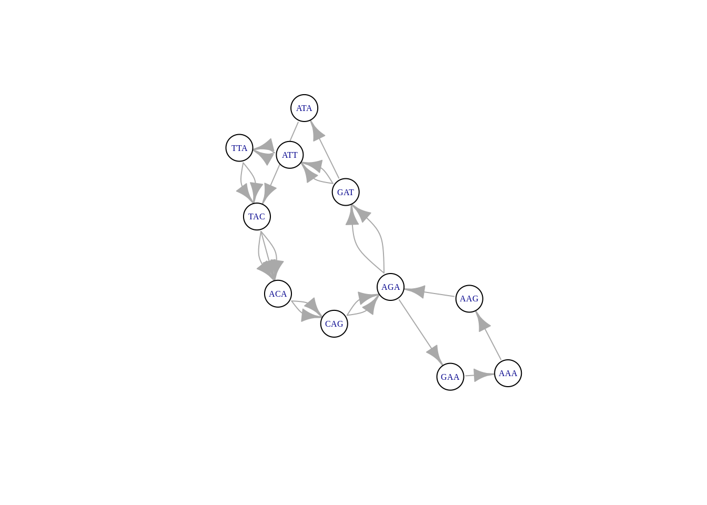
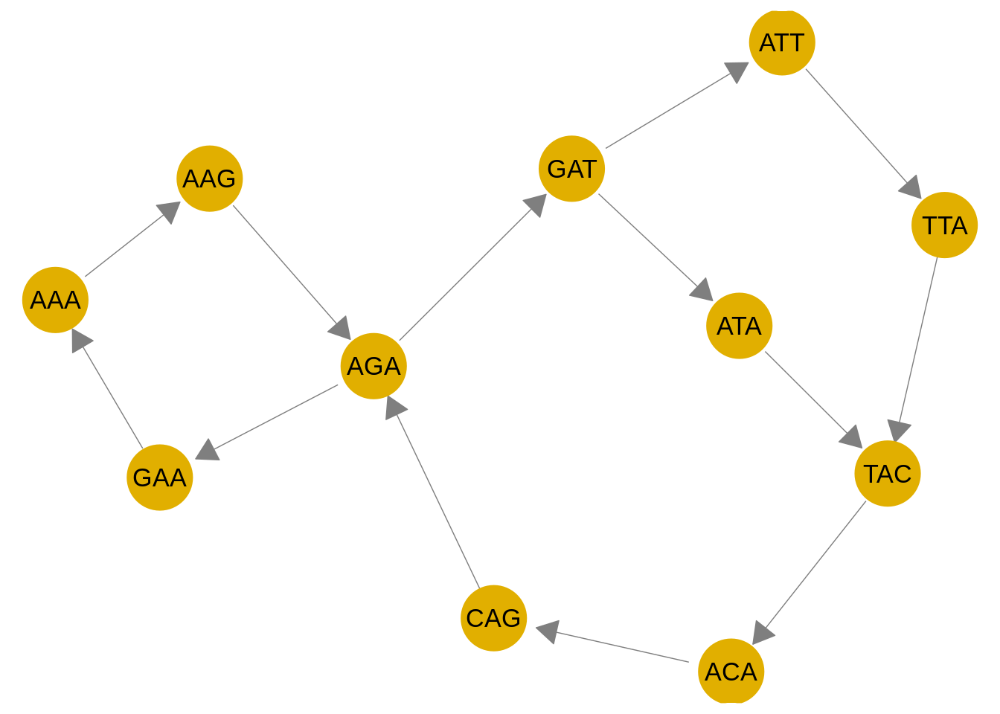

6 De Bruijn graph
generate_kmers <-
for (i in 1:(nchar(seq)-k+1)){
kmers = c(kmers, substr(seq, i, i+k-1))
}
for (i in 1:(nchar(seq)-k+2)){
km1mers = c(km1mers, substr(seq, i, i+k-2))
}
kmers
#> [1] "GATT" "ATTA" "TTAC" "TACA" "ACAG" "CAGA" "AGAT" "GATT"
#> [9] "ATTA" "TTAC" "TACA" "ACAG" "CAGA" "AGAA" "GAAA" "AAAG"
#> [17] "AAGA" "AGAT" "GATA" "ATAC" "TACA"
km1mers
#> [1] "GAT" "ATT" "TTA" "TAC" "ACA" "CAG" "AGA" "GAT" "ATT"
#> [10] "TTA" "TAC" "ACA" "CAG" "AGA" "GAA" "AAA" "AAG" "AGA"
#> [19] "GAT" "ATA" "TAC" "ACA"
unique(km1mers)
#> [1] "GAT" "ATT" "TTA" "TAC" "ACA" "CAG" "AGA" "GAA" "AAA"
#> [10] "AAG" "ATA"
adjacency_matrix = matrix(0, length(unique(km1mers)), length(unique(km1mers)))
rownames(adjacency_matrix) = sort(unique(km1mers))
colnames(adjacency_matrix) = sort(unique(km1mers))
adjacency_matrix
#> AAA AAG ACA AGA ATA ATT CAG GAA GAT TAC TTA
#> AAA 0 0 0 0 0 0 0 0 0 0 0
#> AAG 0 0 0 0 0 0 0 0 0 0 0
#> ACA 0 0 0 0 0 0 0 0 0 0 0
#> AGA 0 0 0 0 0 0 0 0 0 0 0
#> ATA 0 0 0 0 0 0 0 0 0 0 0
#> ATT 0 0 0 0 0 0 0 0 0 0 0
#> CAG 0 0 0 0 0 0 0 0 0 0 0
#> GAA 0 0 0 0 0 0 0 0 0 0 0
#> GAT 0 0 0 0 0 0 0 0 0 0 0
#> TAC 0 0 0 0 0 0 0 0 0 0 0
#> TTA 0 0 0 0 0 0 0 0 0 0 0
for (i in 1:(length(km1mers)-1)){
adjacency_matrix[km1mers[i], km1mers[i+1]] = adjacency_matrix[km1mers[i], km1mers[i+1]] + 1
}
adjacency_matrix
#> AAA AAG ACA AGA ATA ATT CAG GAA GAT TAC TTA
#> AAA 0 1 0 0 0 0 0 0 0 0 0
#> AAG 0 0 0 1 0 0 0 0 0 0 0
#> ACA 0 0 0 0 0 0 2 0 0 0 0
#> AGA 0 0 0 0 0 0 0 1 2 0 0
#> ATA 0 0 0 0 0 0 0 0 0 1 0
#> ATT 0 0 0 0 0 0 0 0 0 0 2
#> CAG 0 0 0 2 0 0 0 0 0 0 0
#> GAA 1 0 0 0 0 0 0 0 0 0 0
#> GAT 0 0 0 0 1 2 0 0 0 0 0
#> TAC 0 0 3 0 0 0 0 0 0 0 0
#> TTA 0 0 0 0 0 0 0 0 0 2 0
debruijn <- igraph::graph_from_adjacency_matrix(adjacency_matrix, mode = 'directed')
igraph::plot.igraph(debruijn, vertex.label.cex=1, arrow.size = .05,
vertex.size = .1, vertex.color = 'white',
curved = TRUE, label.cex = .5)
library(GGally)
#> Ładowanie wymaganego pakietu: ggplot2
#> Registered S3 method overwritten by 'GGally':
#> method from
#> +.gg ggplot2
library(ggnet)
#>
#> Dołączanie pakietu: 'ggnet'
#> Następujące obiekty zostały zakryte z 'package:GGally':
#>
#> ggnet, ggnet2
library(network)
#>
#> 'network' 1.17.1 (2021-06-12), part of the Statnet Project
#> * 'news(package="network")' for changes since last version
#> * 'citation("network")' for citation information
#> * 'https://statnet.org' for help, support, and other information
library(sna)
#> Ładowanie wymaganego pakietu: statnet.common
#>
#> Dołączanie pakietu: 'statnet.common'
#> Następujące obiekty zostały zakryte z 'package:base':
#>
#> attr, order
#> sna: Tools for Social Network Analysis
#> Version 2.6 created on 2020-10-5.
#> copyright (c) 2005, Carter T. Butts, University of California-Irvine
#> For citation information, type citation("sna").
#> Type help(package="sna") to get started.
library(ggplot2)
#net = rgraph(10, mode = "graph", tprob = 0.5)
net = network(adjacency_matrix, directed = TRUE)
# vertex names
ggnet2(net, color = '#E1AF00', label = colnames(adjacency_matrix), size = 15, arrow.size = 12, arrow.gap = 0.05)
#> Ładowanie wymaganego pakietu: scales
#> Warning: `guides(<scale> = FALSE)` is deprecated. Please use
#> `guides(<scale> = "none")` instead.
#> Warning: `guides(<scale> = FALSE)` is deprecated. Please use
#> `guides(<scale> = "none")` instead.
#> Warning: `guides(<scale> = FALSE)` is deprecated. Please use
#> `guides(<scale> = "none")` instead.
#> Warning: `guides(<scale> = FALSE)` is deprecated. Please use
#> `guides(<scale> = "none")` instead.